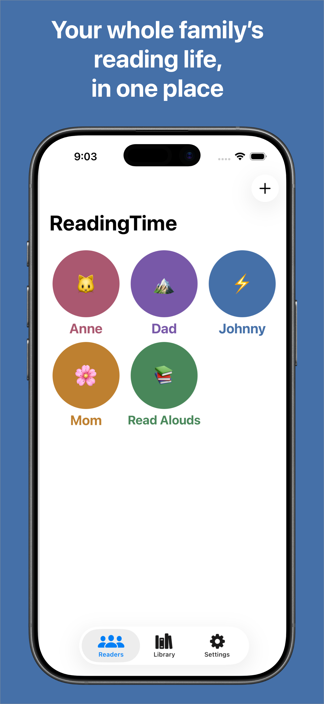
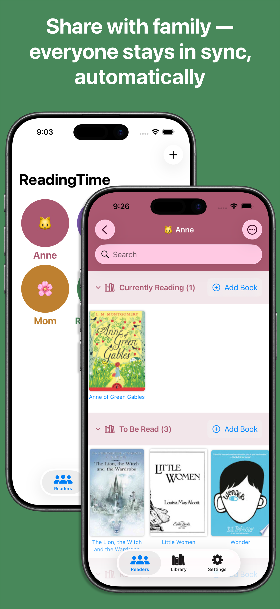
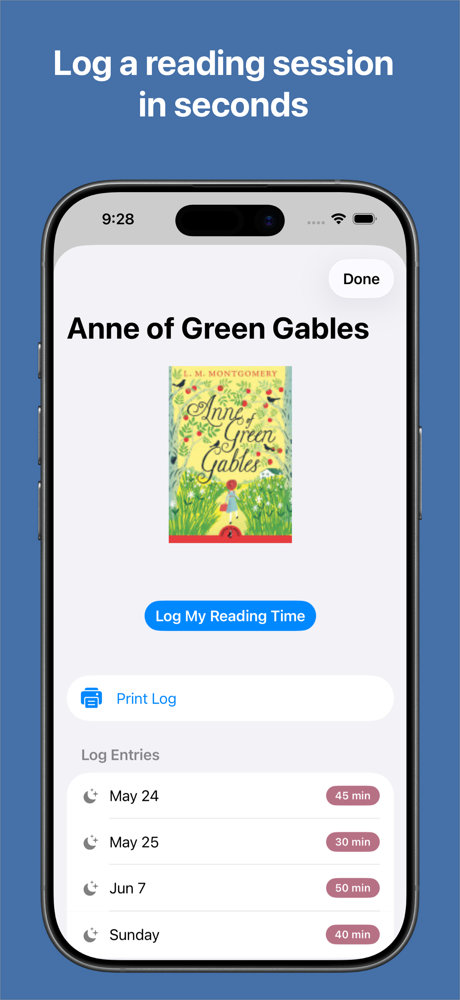
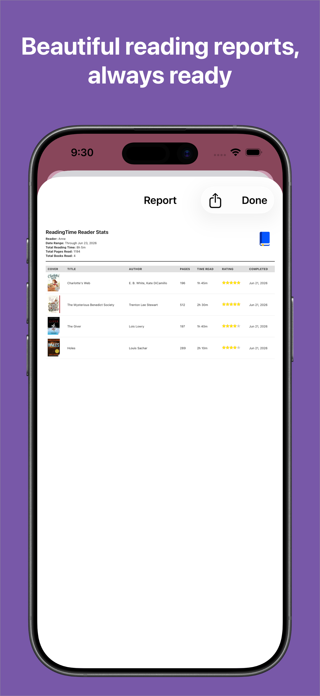
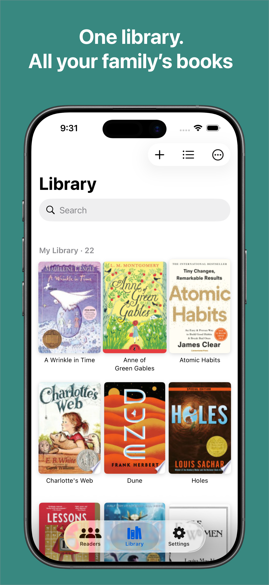

ReadingTime is a private reading tracker for your whole family — like Goodreads, but just for you. No social network, no public reviews, just your family's books and reading history in one place.
Every reader in your family gets their own shelf with Currently Reading, Want to Read, and Already Read sections. Kids can rate their books and add notes. Parents can log sessions, run a timer while reading, and generate PDF reports — perfect for school reading programs.






Version 2 is the biggest update ReadingTime has ever received — a complete rebuild focused on reliability, polish, and making it easier for families to read together.